Inhalt Index DeskTop Bronstein

 Optimierung Lineare Optimierung Grundbegriffe der linearen Optimierung, Normalform Normalform der linearen Optimierungsaufgabe
Optimierung Lineare Optimierung Grundbegriffe der linearen Optimierung, Normalform Normalform der linearen Optimierungsaufgabe


Ist eine Ecke von M bekannt, dann kann eine Normalform des linearen Optimierungsproblems wie folgt ermittelt werden. Man wählt eine zur Ecke gehörende Basis aus m Spalten von 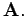 Im Normalfall sind diese Spalten durch die positiven Komponenten der Ecke festgelegt. Die Basisvariablen werden zum Vektor 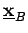 und die Nichtbasisvariablen zum Vektor 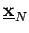 zusammengefaßt. Die zur Basis gehörenden Spalten bilden die Basismatrix A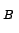, die restlichen Spalten die Matrix 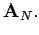 Dann gilt
Die Matrix 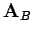 ist regulär und besitzt die Inverse 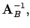 die sogenannte Basisinverse. Multiplikation von (18.9) mit 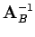 und Umstellung der Zielfunktion nach den Nichbasisvariablen liefert eine kanonische Form des Linearen Optimierungsproblems:
| 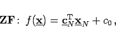 | (18.10a) |
| 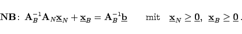 | (18.10b) |
| Beispiel |
|
Im obigen Beispiel ist 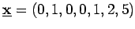 eine Ecke. Somit ist |
| 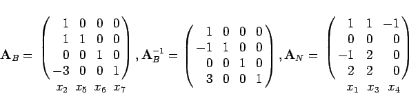 | (18.11a) |
und
| 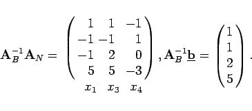 | (18.11b) |
Es ergibt sich das System
| 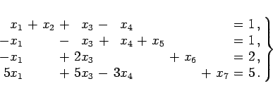 | (18.12) |
Aus 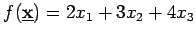 erhält man durch Subtraktion der mit 3 multiplizierten ersten Nebenbedingung eine auf Nichtbasisvariablen umgerechnete Zielfunktion
| 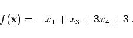 | (18.13) |